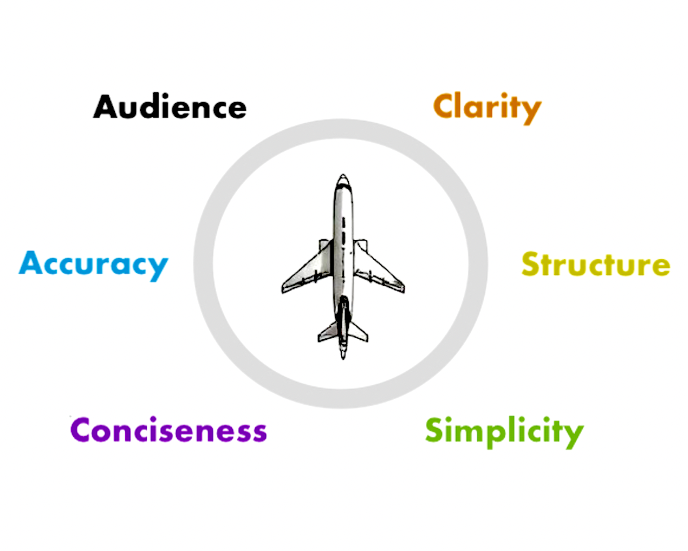

Technical Writing Portfolio
During my years in aviation, I was always fascinated by manuals and checklists—the ability to distill complex procedures into clear, concise instructions. Today, my focus is exactly that: transforming complexity into clarity. Explore my work in API documentation, cybersecurity writing, and technical guides.
